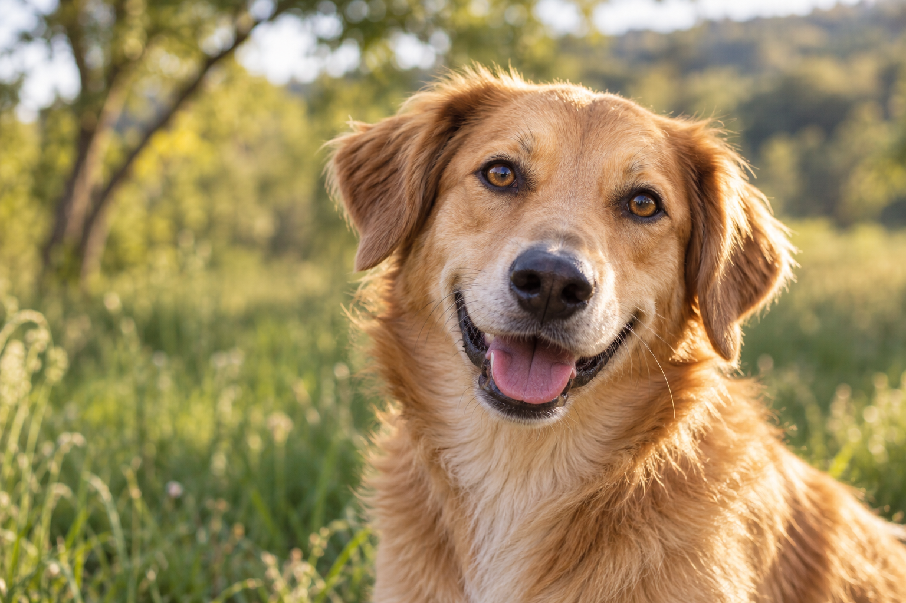
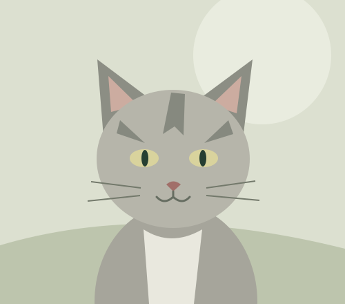
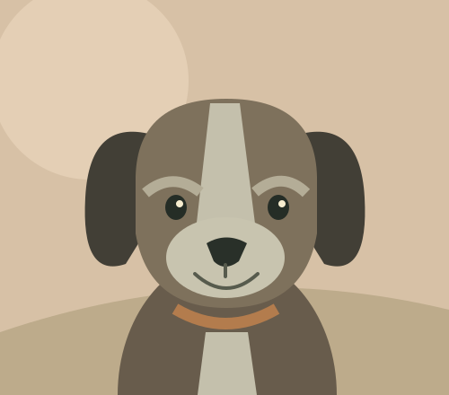

Une vie à partager
REFUGE SPA D’OYONNAX
Une rencontre
peut tout
changer.
Pour eux, une nouvelle vie.
Pour vous, une histoire qui commence.
♥Des personnalités uniques.
Un même besoin d’être aimés.
Un même besoin d’être aimés.

LE BONHEUR SE RENCONTRE ICI
Un nouveau départ,
ensemble.
Photographie d’illustration générée · Maquetteensemble.
Adopter, c’est s’engagerChaque histoire compteUn refuge à taille humaineEnsemble, pour les animaux
DE BELLES HISTOIRES À ÉCRIRE
Et si c’était vous ?
Ils ont chacun leur caractère, leurs petites habitudes.
Et beaucoup d’amour à partager.
Le grand tendre

Tout en douceurPlume
Chat · 2 ans · Femelle
Le cœur n’a pas d’âgeOscar
Chien · 9 ans · MâleUne adoption est une rencontre, puis un engagement pour la vie. Parlons-en ensemble
ICI, ON PREND LE TEMPS.Le début d’une autre vie.
BIENVENUE CHEZ EUX
Un abri aujourd’hui.
Une famille demain.
Au cœur de notre engagement : accueillir, protéger et redonner confiance. Derrière chaque animal, il y a une histoire. Et devant lui, nous l’espérons, une belle rencontre.
Cette maquette imagine un refuge ouvert et humain, où l’on découvre aussi celles et ceux qui prennent soin des animaux chaque jour.
Prenons le temps de nous rencontrerCHACUN PEUT FAIRE LA DIFFÉRENCE
À chacun son coup de patte.
LA SUITE COMMENCE PAR UN BONJOUR
Faisons connaissance.
Un projet d’adoption ? Envie d’aider ?
L’équipe du refuge est votre premier contact.
Contacter le refuge sur le site officiel
Retrouvez les coordonnées et horaires à jour sur le site du refuge.